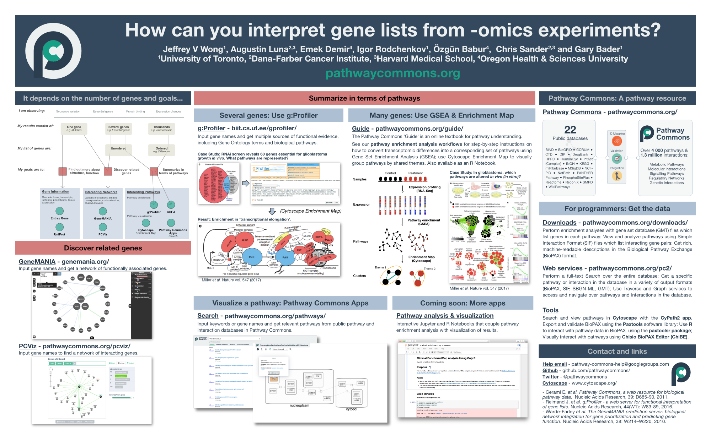

Pathway Guide
Pathway Commons
Guide
Presentations
How can you interpret gene lists from -omics experiments?
How can you interpret gene lists from -omics experiments?
The 2017 Meeting of the American Society of Cell Biology
